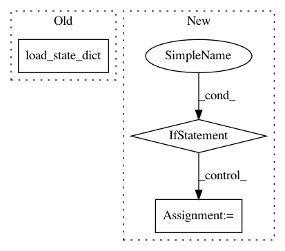

f90efe38fb0b1019e5bdc06b8a325aefe44893ea,face_alignment/detection/sfd/sfd_detector.py,SFDDetector,__init__,#SFDDetector#,18
Before Change
os.rename(os.path.join(path_to_temp_detector), os.path.join(path_to_detector))
self.face_detector = s3fd()
self.face_detector.load_state_dict(torch.load(path_to_detector))
self.face_detector.to(device)
self.face_detector.eval()
After Change
super(SFDDetector, self).__init__(device, verbose)
// Initialise the face detector
if path_to_detector is None:
model_weights = load_url(models_urls["s3fd"])
else:
model_weights = torch.load(path_to_detector)
self.face_detector = s3fd()
self.face_detector.load_state_dict(model_weights)
self.face_detector.to(device)
self.face_detector.eval()
In pattern: SUPERPATTERN
Frequency: 4
Non-data size: 3
Instances
Project Name: 1adrianb/face-alignment
Commit Name: f90efe38fb0b1019e5bdc06b8a325aefe44893ea
Time: 2018-12-19
Author: bulat.adrian@gmail.com
File Name: face_alignment/detection/sfd/sfd_detector.py
Class Name: SFDDetector
Method Name: __init__
Project Name: richzhang/colorization-pytorch
Commit Name: 9ba91fa13cbb1e7bc4069e46469b34abb5ca4869
Time: 2018-05-22
Author: tongzhou.wang.1994@gmail.com
File Name: models/base_model.py
Class Name: BaseModel
Method Name: load_networks
Project Name: xinntao/BasicSR
Commit Name: bc9a9ebb8bba8a6b2865fc7eed4c00e6f6b1693e
Time: 2019-06-01
Author: wxt1994@126.com
File Name: codes/models/base_model.py
Class Name: BaseModel
Method Name: load_network